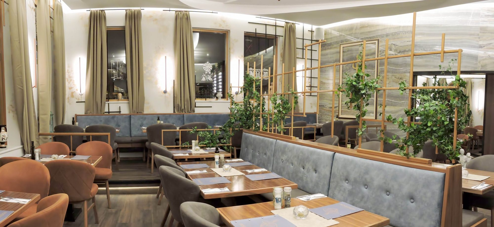
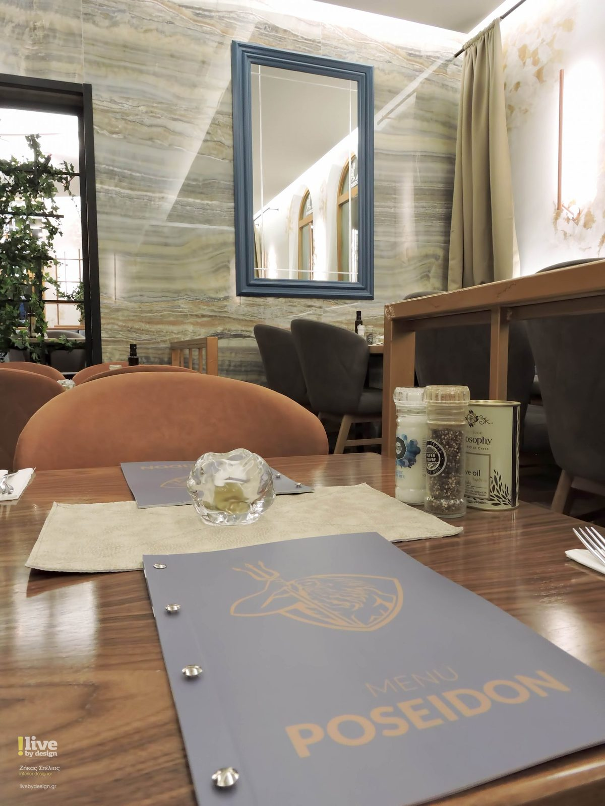
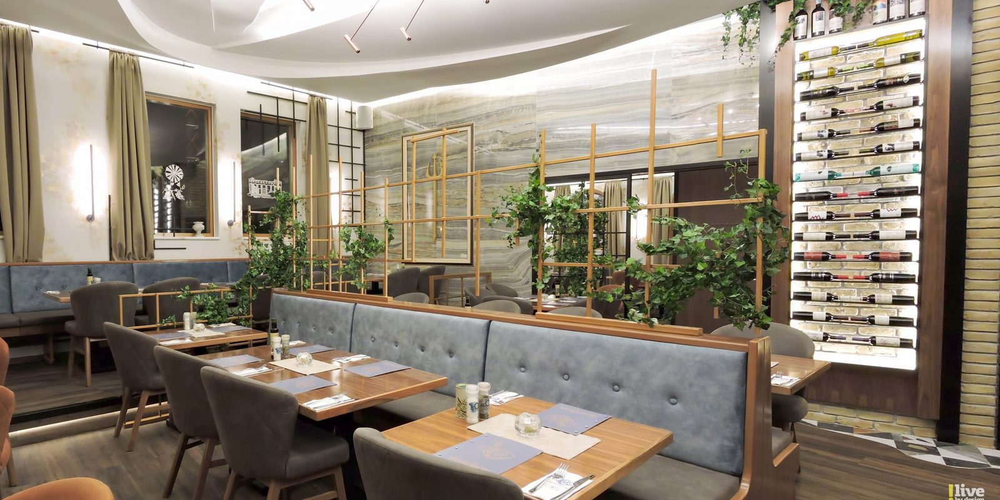
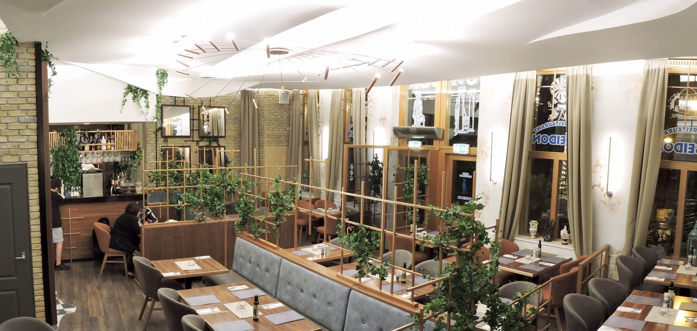
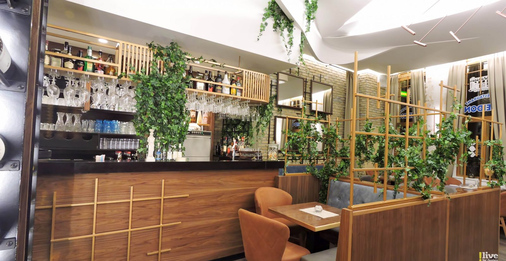
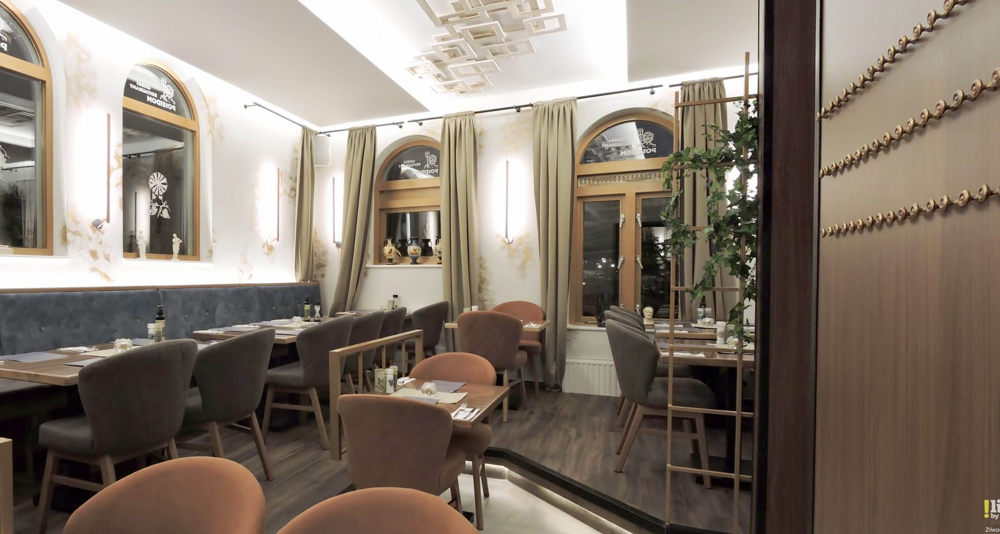
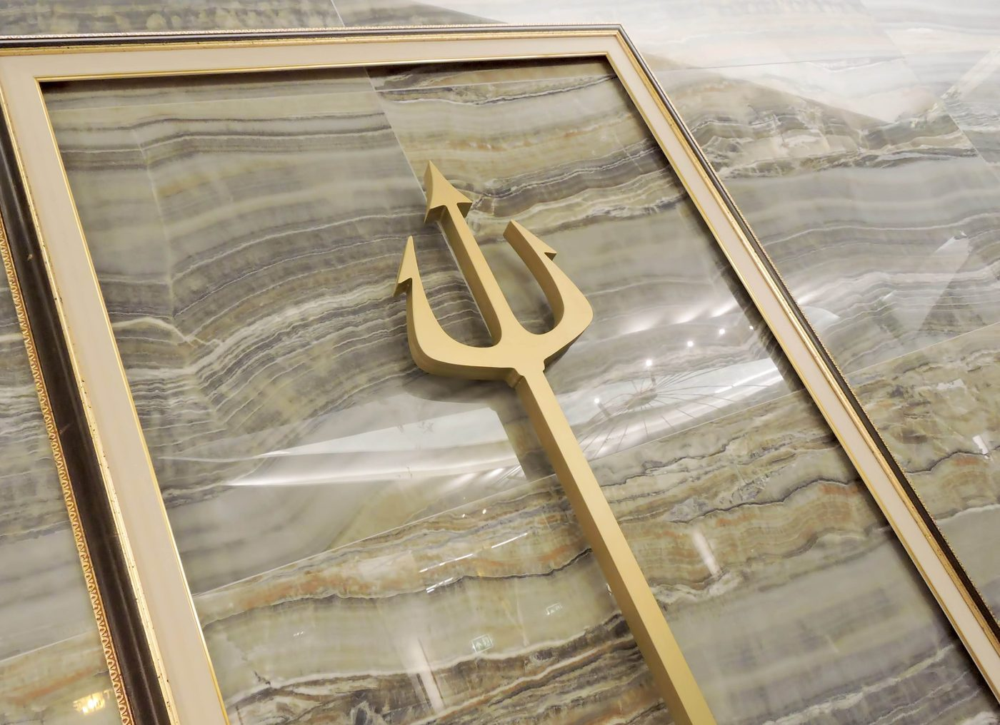

Gastvrij Grieks aan de jachthaven van Vlissingen
Een gezellig Grieks restaurant in het centrum van Vlissingen, waar u gastvrij wordt ontvangen. Dagelijks open vanaf 17.00 uur, ook om af te halen.
uit ruim 1.100 reviews op Google

Specialiteiten van het huis
Traditionele Griekse gerechten, veel ervan uit de oven. Alle gerechten worden geserveerd met bijpassend garnituur en salade.
- Tiganaki kotopoulo€ 23,00Stukjes kipfilet met verse paprika, champignons, uitjes en tomatensaus
- Arni kokinisto€ 26,00Lamsbout uit de oven met aubergine, okrabonen of gigantes (witte reuzenbonen)
- Mousaka€ 23,00Ovenschotel met aardappel, aubergine, courgette, gekruid gehakt en bechamelsaus
- Stifado€ 25,00Traditionele stoofschotel van gemarineerd konijn met kleine uien, volgens speciaal recept
- Moschari giouvetsi€ 27,00Kalfsvlees met kritharaki (Griekse pasta in tomatensaus) en kaas uit de oven
Alle gerechten kunnen naar wens worden aangepast. U kunt ook afhalen: geef uw bestelling telefonisch door.
Bekijk de hele menukaartEen kijkje in Poseidon
Een schitterende locatie aan de jachthaven, in het centrum van Vlissingen. Na de verbouwing zijn we ontzettend blij met alle reacties van onze gasten.





Gastvrij sinds 2003
Al sinds 1992 zit er een Grieks restaurant op deze plek aan de Zeilmarkt. In 2003 werden Elena en Vasilis Papapostolou de eigenaren van Poseidon.
Goede kwaliteit en een uitstekende service staan bij ons centraal. In 2015 kwam Rob Geus van de Smaakpolitie langs: alles bleek keurig in orde en we kregen het hygiënekeurmerk uitgereikt.
Reserveer een tafel
Reserveren graag via WhatsApp of telefonisch. Ook voor afhalen en groepen.
Grieks Restaurant Poseidon
Reserveren, afhalen of een vraag? Bel of stuur een WhatsApp.
- Dagelijks
- 17.00 – 22.00
Goed om te weten
Allergieën of dieetwensen? Laat het ons weten bij het reserveren. Alle gerechten kunnen naar wens worden aangepast.